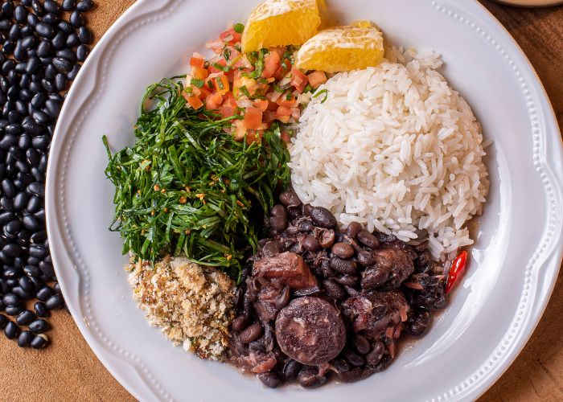

O sabor da comida caseira com o toque da nossa terra
No restaurante Sabor da Terra, trazemos para a sua mesa o melhor da comida caseira, com ingredientes frescos e receitas tradicionais que honram a cultura gastronômica local.
Nossa missão é proporcionar uma experiência única, com pratos preparados com carinho, ambiente aconchegante e atendimento de excelência.
Explore nosso cardápio variado, conheça nossa história e entre em contato para reservas ou pedidos.